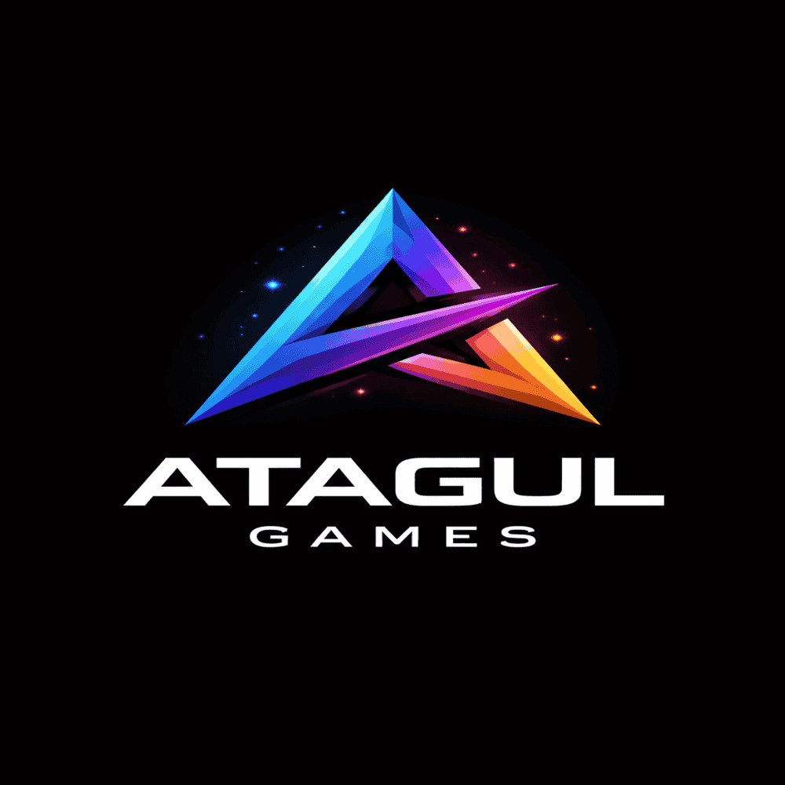

Atagul Games
Bağımsız Oyun ve Yazılım Geliştirme
Bağımsız Oyun ve Yazılım Geliştirme
Atagul Games, Antalya / Kepez merkezli olarak faaliyet gösteren bağımsız bir oyun ve yazılım geliştirme oluşumudur. Proje, ticari beklentilerden çok üretim, öğrenme ve geliştirme odaklı bir anlayışla kurulmuştur.
Atagul Games çatısı altında geliştirilen projeler; oyunlar, geliştirici araçları ve dijital yazılımlardan oluşur. Her proje, bireysel emek ve uzun süreli geliştirme süreçleri sonucunda ortaya çıkar.

Ahmet Mete Atagül, Atagul Games’in kurucusu ve geliştiricisidir. Yazılım ve oyun geliştirme alanında bireysel çalışmalar yürüterek, projelerini sıfırdan tasarlayıp hayata geçirmektedir.
Atagul IDE başta olmak üzere, geliştirilen yazılımlar Türkçe arayüzlü olacak şekilde tasarlanmış ve yerli geliştiriciler için erişilebilir hale getirilmiştir.
E-posta: atagul.games@gmail.com
Konum: Antalya / Kepez